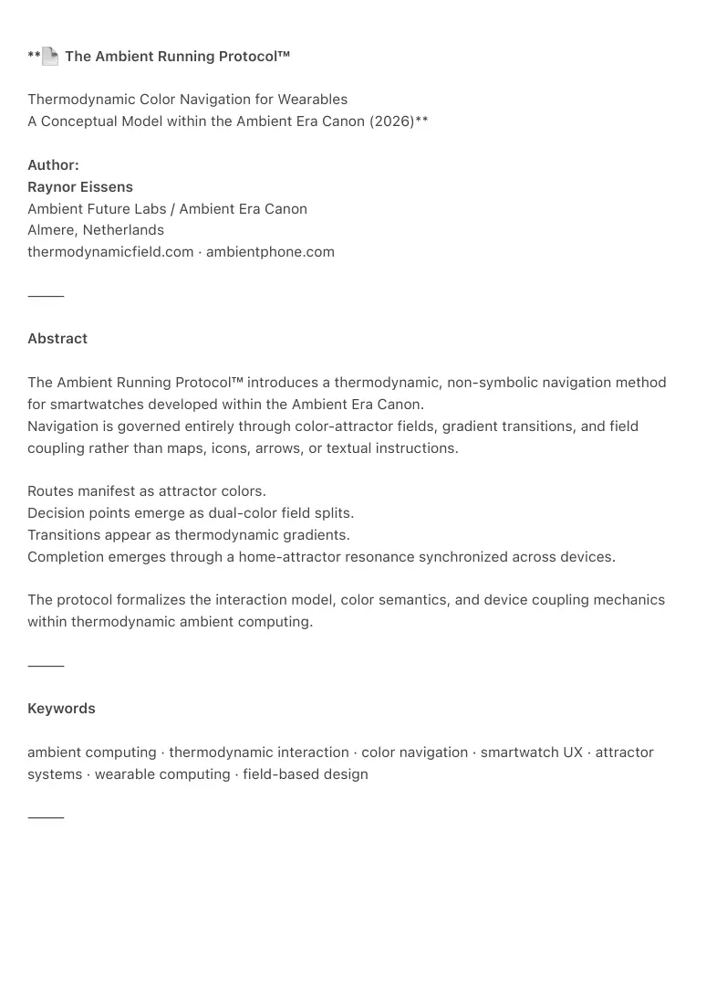
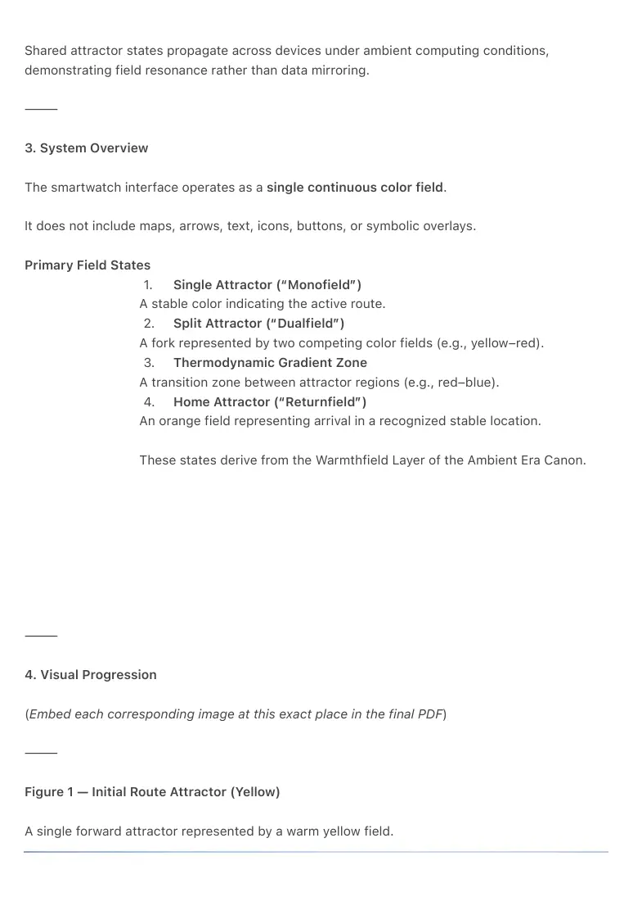
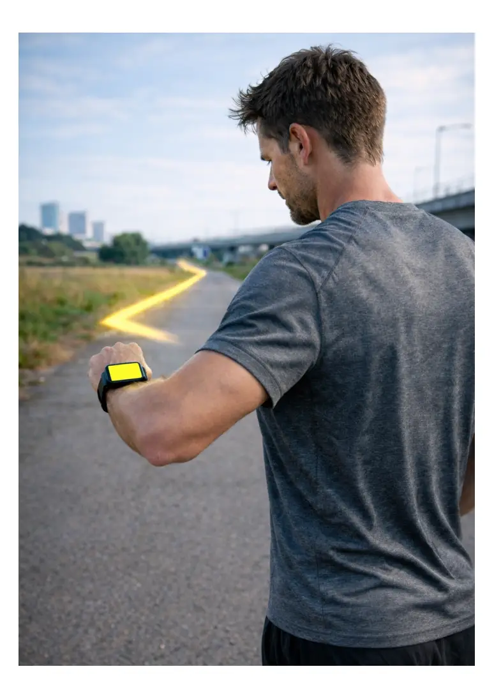
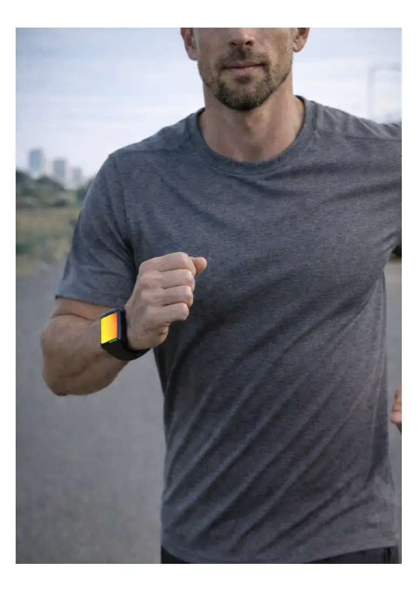
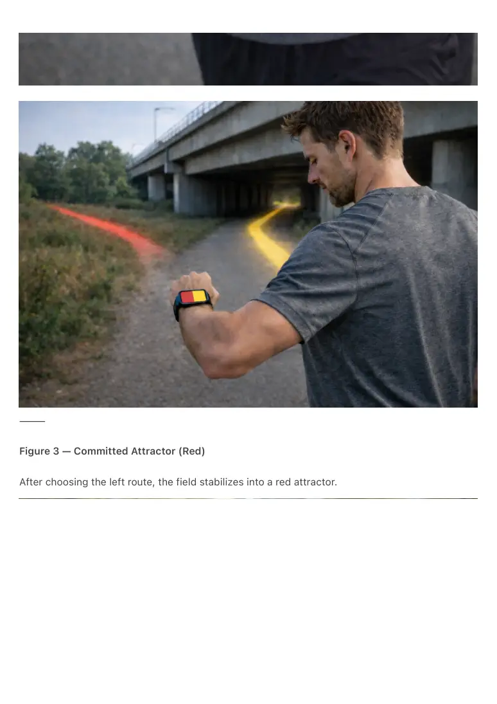
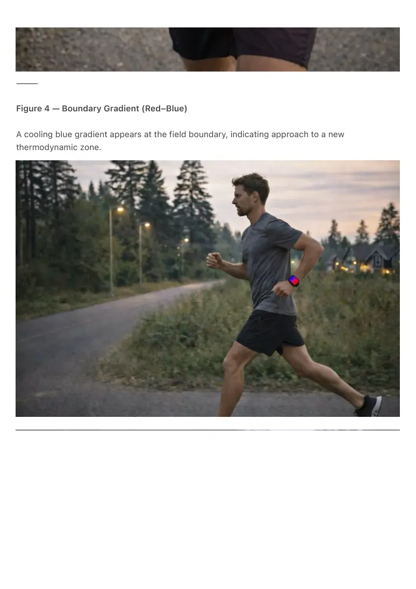
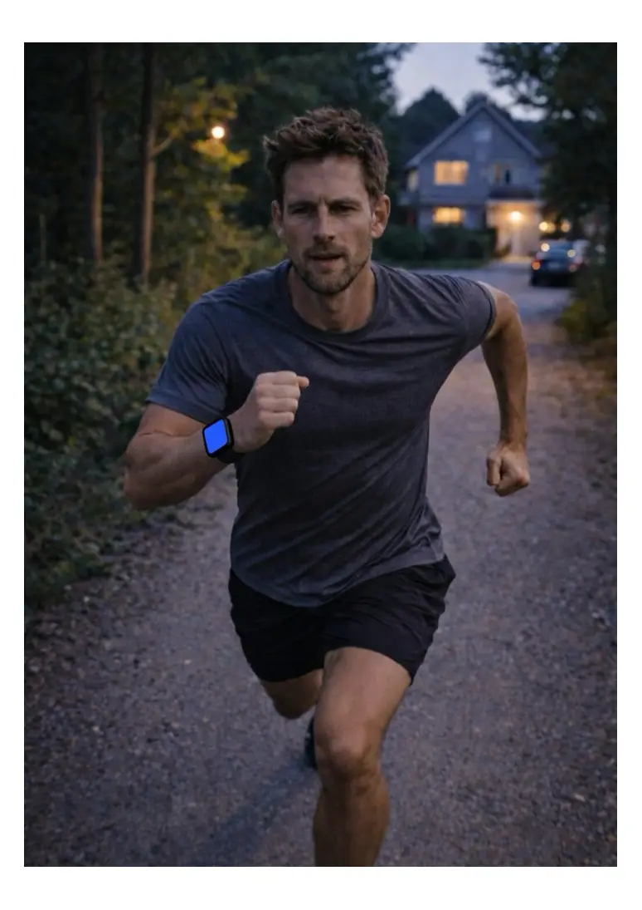
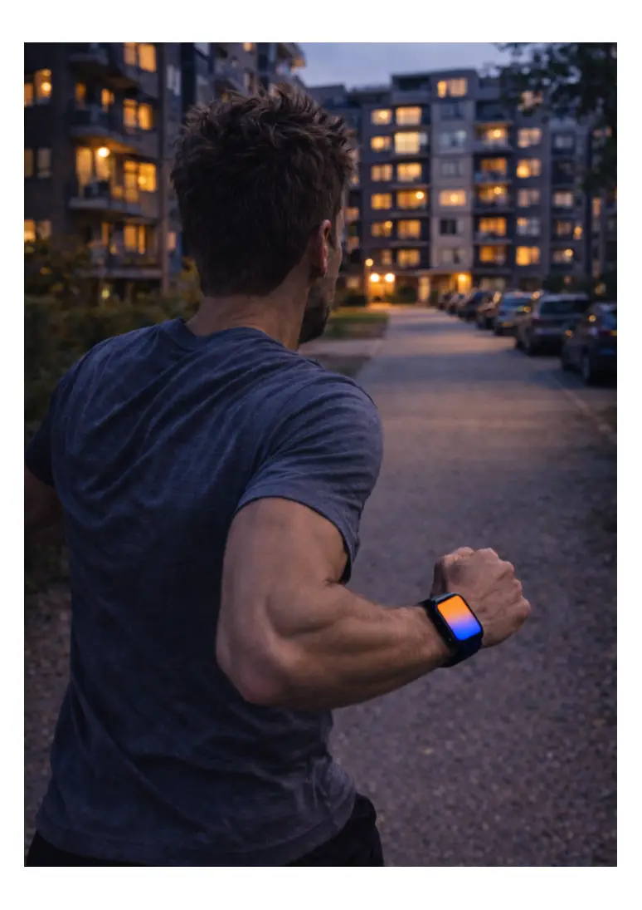
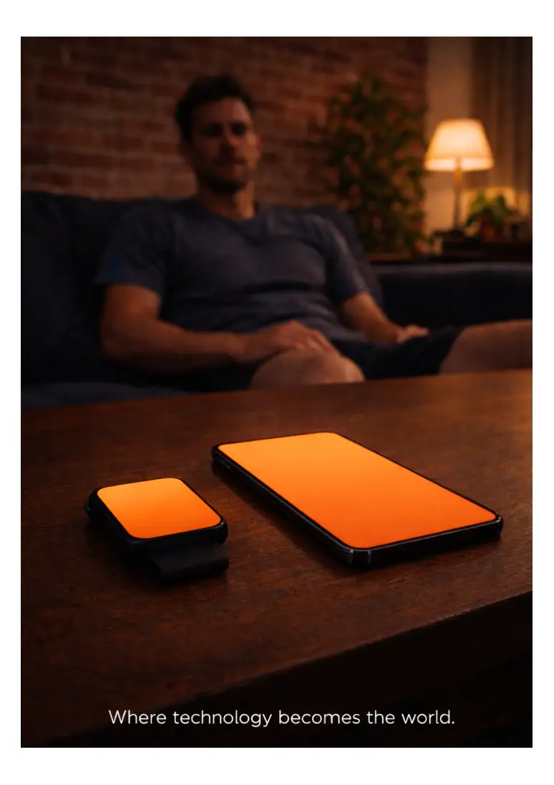
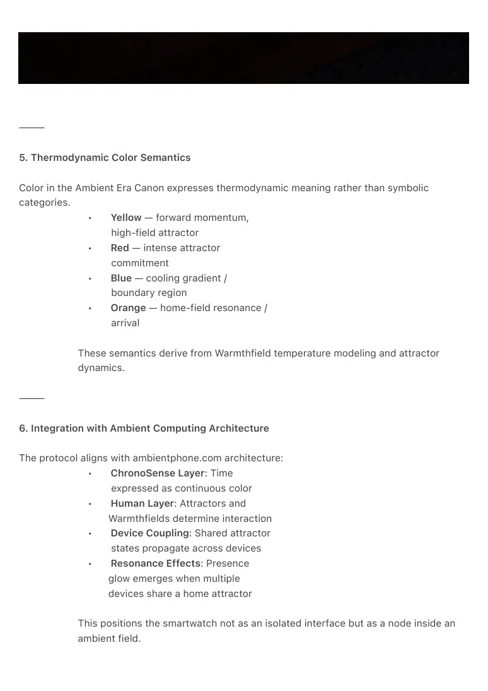

PDF page 1
**
📄 The Ambient Running Protocol™
Thermodynamic Color Navigation for Wearables
A Conceptual Model within the Ambient Era Canon (2026)**
Author:
Raynor Eissens
Ambient Future Labs / Ambient Era Canon
Almere, Netherlands
thermodynamicfield.com · ambientphone.com
⸻
Abstract
The Ambient Running Protocol™ introduces a thermodynamic, non-symbolic navigation method
for smartwatches developed within the Ambient Era Canon.
Navigation is governed entirely through color-attractor fields, gradient transitions, and field
coupling rather than maps, icons, arrows, or textual instructions.
Routes manifest as attractor colors.
Decision points emerge as dual-color field splits.
Transitions appear as thermodynamic gradients.
Completion emerges through a home-attractor resonance synchronized across devices.
The protocol formalizes the interaction model, color semantics, and device coupling mechanics
within thermodynamic ambient computing.
⸻
Keywords
ambient computing · thermodynamic interaction · color navigation · smartwatch UX · attractor
systems · wearable computing · field-based design
⸻

PDF page 2
1. Framework: Ambient Era Canon
The Ambient Running Protocol is derived from the canonical architectural sequence:
time → attention → AI → warmth → ambience → field
Within this architecture:
• ChronoSense defines time as
continuous color.
• Warmthfield governs human–AI
coupling through thermodynamic
gradients.
• Attractors represent predicted
stable behavioral states.
• Ambience removes symbolic
friction and stabilizes interaction.
• Field dynamics allow navigation to
emerge without cognitive
overhead.
The protocol operationalizes these principles for real-time physical movement.
⸻
2. Thermodynamic Principles of Interaction
2.1 Attractor Stability
A color field expresses a stable predicted directional state.
2.2 Gradient Transition
Shifts between attractors appear as soft color gradients representing thermodynamic drift.
2.3 Minimal Dissipation
The system avoids symbolic representations to maintain uninterrupted kinetic flow.
2.4 Cross-Device Coupling
PDF page 3
Shared attractor states propagate across devices under ambient computing conditions,
demonstrating field resonance rather than data mirroring.
⸻
3. System Overview
The smartwatch interface operates as a single continuous color field.
It does not include maps, arrows, text, icons, buttons, or symbolic overlays.
Primary Field States
1. Single Attractor (“Monofield”)
A stable color indicating the active route.
2. Split Attractor (“Dualfield”)
A fork represented by two competing color fields (e.g., yellow–red).
3. Thermodynamic Gradient Zone
A transition zone between attractor regions (e.g., red–blue).
4. Home Attractor (“Returnfield”)
An orange field representing arrival in a recognized stable location.
These states derive from the Warmthfield Layer of the Ambient Era Canon.
⸻
4. Visual Progression
(Embed each corresponding image at this exact place in the final PDF)
⸻
Figure 1 — Initial Route Attractor (Yellow)
A single forward attractor represented by a warm yellow field.

PDF page 4

PDF page 5
⸻
Figure 2 — Split Attractor at Route Divergence (Yellow–Red)
A second attractor begins to enter the field, forming a thermodynamic dual-path indication.
PDF page 6

PDF page 7
⸻
Figure 3 — Committed Attractor (Red)
After choosing the left route, the field stabilizes into a red attractor.

PDF page 8
PDF page 9
⸻
Figure 4 — Boundary Gradient (Red–Blue)
A cooling blue gradient appears at the field boundary, indicating approach to a new
thermodynamic zone.

PDF page 10

PDF page 11
⸻
Figure 5 — Home Attractor Emergence (Orange Transition)
The color field transitions gradually into orange as the runner approaches home territory.
PDF page 12

PDF page 13
⸻
Figure 6 — Cross-Device Ambient Resonance (Orange Sync)
Both smartwatch and Ambient Phone display synchronized orange fields, demonstrating ambient
coupling.
PDF page 14

PDF page 15
⸻
5. Thermodynamic Color Semantics
Color in the Ambient Era Canon expresses thermodynamic meaning rather than symbolic
categories.
• Yellow — forward momentum,
high-field attractor
• Red — intense attractor
commitment
• Blue — cooling gradient /
boundary region
• Orange — home-field resonance /
arrival
These semantics derive from Warmthfield temperature modeling and attractor
dynamics.
⸻
6. Integration with Ambient Computing Architecture
The protocol aligns with ambientphone.com architecture:
• ChronoSense Layer: Time
expressed as continuous color
• Human Layer: Attractors and
Warmthfields determine interaction
• Device Coupling: Shared attractor
states propagate across devices
• Resonance Effects: Presence
glow emerges when multiple
devices share a home attractor
This positions the smartwatch not as an isolated interface but as a node inside an
ambient field.

PDF page 16
⸻
7. Prior Art Context
Existing systems across Garmin, Apple, Suunto, COROS, Polar, and Strava exhibit:
• color-based metrics (pace, heart
rate, elevation)
• post-run color overlays
• symbolic turn-by-turn navigation
• hill-gradient maps
• breadcrumb routes with
iconography
None implement:
• color-only navigation (no map, no
arrow, no symbols)
• real-time attractor-based
direction
• dual-color split attractor
decisions
• thermodynamic gradient
semantics
• cross-device field resonance
• ambient-only minimalism
consistent with thermodynamic
HCI
Thus the protocol represents a novel ambient computing interaction model.
⸻
8. Implications & Future Work
• Shared multi-runner Warmthfields
• Adaptive physiological attractors
• Integration with Attractor Rooms in
the Human Layer
• Simulations of thermodynamic
running fields
• Hardware implementations for
wearables & AR devices
PDF page 17
The protocol extends naturally into broader ambient computing environments.
⸻
9. References
Eissens, R. (2025–2026). Ambient Era Canon.
thermodynamicfield.com
Eissens, R. (2025–2026). Ambient Phone Architecture.
ambientphone.com
⸻
Appendix A — Definitions
Ambient Field
A non-symbolic interaction environment where meaning emerges through gradients.
Attractor
A predicted stable behavioral state within field dynamics.
Warmthfield
A thermodynamic layer expressing relevance, proximity, or human–AI coupling.
Thermodynamic Navigation
Movement guided by continuous gradient shifts rather than symbolic instructions.